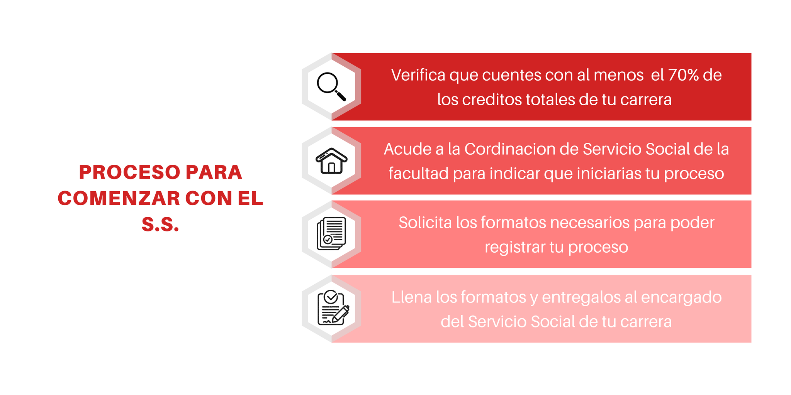

TRÁMITES GENERALES PARA EL SERVICIO SOCIAL
- Antes de iniciar el trámite de inicio de Servicio Social:
- Verificar que el Programa de Servicio Social esté dado de alta ante la Dirección General de Orientación y Atención Educativa (DGOAE) y vigente.
- Consultar el Reglamento de Servicio Social de la Facultad de Ingeniería de la UNAM.
- Para realizar el trámite de inicio del servicio social:
- Descargar de Internet los formatos:
- S.S.01 (Carta de Solicitud e Informaciónn Estadística).
- S.S.02 (Carta de Aceptación) y solicita que sea llenado por la dependencia donde realizarás el servicio social.
- Descargar de Internet tu historia académica.
- Entregar (original y dos copias fotostáticas legibles) en el cubículo de la Coordinación de Servicio Social de la División correspondiente, para la aprobación del Servicio Social:
- La "Carta de Solicitud e Información Estadística" (formato S.S.01) impresa en papel blanco.
- La "Carta de Aceptación" (formato S.S.02)de la dependencia en donde prestarás tu servicio social impresa en papel membretado de la dependencia.
- Historia académica.
- Si la solicitud es aceptada:
- Descargar de Internet el documento "Informes bimestrales de Servicio Social" (formato S.S.03).
- Dos días hábiles después de entregar el formato SS.02 (Carta de Aceptación), recoger en la Coordinación de Servicio Social correspondiente una copia del mismo (con los sellos y firmas de aceptación de la prestación de servicio social).
- Una vez iniciado el servicio social, presentar oportunamente en la Coordinación de Servicio Social de la División correspondiente, los "informes bimestrales de servicio social" (formato S.S.03) debidamente firmado por el alumno y el jefe inmediato de éste.
- Para la entrega del último informe de actividades bimestrales del servicio social:
- Descargar de Internet el formato S.S.04 (Carta de Terminación).
-
Entregar en la Coordinación de Servicio Social correspondiente el último informe bimestral
de actividades, junto con la Carta de Terminación expedida por la dependencia en donde el
alumno realizó su servicio social (formato S.S.04, en original y dos copias).
La falta de entrega oportuna de dicho documento podrá ser motivo de baja (artículo 15 del
Reglamento de Servicio Social de la Facultad de Ingeniería).
Al igual que los informes, la falta de presentación oportuna de la carta de terminación se considerará como abandono del servicio social. Se entenderá por presentación oportuna a más tardar un mes después de la fecha de entrega del último informe, en concordancia con el artículo 15 del Reglamento de Servicio Social de la Facultad de Ingeniería. - Recoger en la Coordinación de Administración Escolar de la Facultad de Ingeniería (planta baja del edificio D del conjunto norte), la carta de liberación del servicio social, 15 días hábiles después de haber entregado el último informe y la Carta de Terminación (formato S.S.04).
Nota: Los informes deberán cumplir los requisitos indicados en el formato S.S.03.
t2
t3
TRÁMITES DE INICIO DE SERVICIO SOCIAL
- Para realizar el trámite de inicio del servicio social:
- Descargar de Internet los formatos:
- S.S.01 (Carta de Solicitud e Información Estadística).
- S.S.02 (Carta de Aceptación) y solicita que sea llenado por la dependencia donde realizarás el servicio social.
- Descargar de Internet tu historia académica.
- Entregar (original y dos copias fotostáticas legibles) en el cubículo de la Coordinación de Servicio Social de la División correspondiente, para la aprobación del Servicio Social:
- La "Carta de Solicitud e Información Estadística" (formato S.S.01) impresa en papel blanco.
- La "Carta de Aceptación" (formato S.S.02)de la dependencia en donde prestarás tu servicio social impresa en papel membretado de la dependencia.
- Historia académica.
- Si la solicitud es aceptada:
- Descargar de Internet el documento "Informes bimestrales de Servicio Social" (formato S.S.03).
- Cinco días hábiles después de entregar el formato SS.02 (Carta de Aceptación), recoger en la Coordinación de Servicio Social correspondiente una copia del mismo (con los sellos y firmas de aceptación de la prestación de servicio social).
- Una vez iniciado el servicio social, presentar oportunamente en la Coordinación de Servicio Social de la División correspondiente, los "informes bimestrales de servicio social" (formato S.S.03) debidamente firmado por el alumno y el jefe inmediato de éste.
Nota: Los informes deberán cumplir los requisitos indicados en el formato S.S.03.
INFORMES BIMESTRALES DE ACTIVIDADES
- Si la solicitud es aceptada:
- Descargar de Internet el documento "Informes bimestrales de Servicio Social" (formato S.S.03).
- Una vez iniciado el servicio social, presentar oportunamente en la Coordinación de Servicio Social de la División correspondiente, los "informes bimestrales de servicio social" (formato S.S.03) debidamente firmado por el alumno y el jefe inmediato de éste.
- Para la entrega del último informe de actividades bimestrales del servicio social:
- Descargar de Internet el formato S.S.04 (Carta de Terminación).
Nota: Los informes deberán cumplir los requisitos indicados en el formato S.S.03.
TRÁMITES PARA CONCLUIR EL SERVICIO SOCIAL
- Para la entrega del último informe de actividades bimestrales del servicio social:
- Descargar de Internet el formato S.S.04 (Carta de Terminación).
-
Entregar en la Coordinación de Servicio Social correspondiente el último informe
bimestral de actividades, junto con la Carta de Terminación expedida por la dependencia
en donde el alumno realizó su servicio social (formato S.S.04, en original y dos copias).
La falta de entrega oportuna de dicho documento podrá ser motivo de baja (artículo 15
del Reglamento de Servicio Social de la Facultad de Ingeniería).
Al igual que los informes, la falta de presentación oportuna de la carta de terminación se considerará como abandono del servicio social. Se entenderá por presentación oportuna a más tardar un mes después de la fecha de entrega del último informes, en concordancia con el artículo 15 del Reglamento de Servicio Social de la Facultad de Ingeniería. - Recoger en la Coordinación de Administración Escolar de la Facultad de Ingeniería (planta baja del edificio D del conjunto norte), la carta de liberación del servicio social, 15 días hábiles después de haber entregado el último informe y la Carta de Terminación (formato S.S.04).
NOTIFICACIONES
Cambio de jefe inmediato del alumno.
Cambio de responsable de programa de servicio social.
Suspensión temporal de actividades.
CONSTITUCIÓN POLÍTICA DE LOS ESTADOS UNIDOS MEXICANOS
Publicado en el Diario Oficial de la Federación el 5 de febrero de 1917 y reformado el 13 de diciembre de 1934, 30 de diciembre de 1946, 9 de junio de 1950, 28 de enero de 1992 y 5 de marzo de 1993.
Articulo 3
Todo individuo tiene el derecho a recibir educación. El estado-federación, estados y municipios impartirá educación preescolar, primaria y secundaria. La educación primaria y secundaria son obligatorias.
La educación que imparta el estado tenderá a desarrollar armónicamente todas las facultades del ser humano y fomentará en él, a la vez, el amor a la patria y la conciencia de la solidaridad internacional, en la independencia y la justicia:
- Garantizada por el articulo 24 la libertad de creencia, dicha educación será laica y, por tanto, se mantendrá por completo ajena a cualquier doctrina religiosa;
- El criterio que orientará a esa educación se basará en los resultados del progreso científico, luchará contra la ignorancia y sus efectos, las servidumbres, los fanatismos y los prejuicios;
- Será democrática, considerando a la democracia no solamente como una estructura jurídica y un régimen político, sino como un sistema de vida fundado en el constante mejoramiento económico, social y cultural del pueblo;
- Será nacional en cuanto -sin hostilidades ni exclusivismos- atenderá a la comprensión de nuestros problemas, al aprovechamiento de nuestros recursos, a la defensa de nuestra independencia política, al aseguramiento de nuestra independencia económica y a la continuidad y acrecentamiento de nuestra cultura;
- Contribuirá a la mejor convivencia humana, tanto por los elementos que aporte a fin de robustecer en el educando, junto con el aprecio para la dignidad de la persona y la integridad de la familia, la convicción del interés general de la sociedad, cuanto por el cuidado que ponga en sustentar los ideales de fraternidad e igualdad de derechos de todos los hombres, evitando los privilegios de razas, de religión, de grupos, de sexos o de individuos;
- Para dar pleno cumplimiento a lo dispuesto en el segundo párrafo y en la fracción II, el ejecutivo federal determinará los planes y programas de estudio de la educación primaria, secundaria y normal para toda la república. Para tales efectos, el ejecutivo federal considerará la opinión de los gobiernos de las entidades federativas y de los diversos sectores sociales involucrados en la educación, en los términos que la ley señale;
- Toda la educación que el estado imparta será gratuita;
- Además de impartir la educación preescolar, primaria y secundaria, señaladas en el primer párrafo, el estado promoverá y atenderá todos los tipos y modalidades educativas - incluyendo la educación superior - necesarios para el desarrollo de la nación, apoyará la investigación científica y tecnológica, y alentará el fortalecimiento y difusión de nuestra cultura;
-
Los particulares podrán impartir educación en todos sus tipos y modalidades;
En los términos que establezca la ley, el estado otorgará y retirará el reconocimiento de validez oficial a los estudios que se realicen en planteles particulares. En el caso de la educación primaria, secundaria y normal, los particulares deberán: - Impartir la educación con apego a los mismos fines y criterios que establecen el segundo párrafo y la fracción I, así como cumplir los planes y programas a que se refiere la fracción III;
- Obtener previamente, en cada caso, la autorización expresa del poder público, en los términos que establezca la ley;
- Las universidades y las demás instituciones de educación superior a las que la ley otorgue autonomía, tendrán la facultad y la responsabilidad de gobernarse a sí mismas; realizarán sus fines de educar, investigar y difundir la cultura de acuerdo a los principios de este artículo, respetando la libertad de cátedra e investigación y de libre examen y discusión de las ideas; determinarán sus planes y programas; fijarán los términos de egreso, promoción y permanencia de su personal académico; y administrarán su patrimonio. Las relaciones laborales, tanto del personal académico como del administrativo, se normarán por el apartado A del articulo 123 de esta constitución en los términos con las modalidades que establezca la Ley Federal del Trabajo conforme a las características propias de un trabajo especial, de manera que concuerden con la autonomía, la libertad de cátedra, la investigación y los fines de las instituciones a que esta fracción se refiere;
- El Congreso de la Unión, con el fin de unificar y coordinar la educación en toda la república, expedirá las leyes necesarias, destinadas a distribuir la función social educativa entre la federación, los estados y los municipios, a fijar las aportaciones económicas correspondientes a ese servicio público y a señalar las sanciones aplicables a los funcionarios que no cumplan o hagan cumplir las disposiciones relativas, lo mismo que a todos aquellos que las infrinjan.
Además:
Articulo 5
A ninguna persona podrá impedirse que se dedique a la profesión, industria, comercio o trabajo que le acomode siendo lícitos. El ejercicio de esta libertad solo podrá vedarse por determinación judicial, cuando se ataquen los derechos de terceros o por resolución gubernativa, dictada en los términos que marque la ley, cuándo se ofendan los derechos de la sociedad. Nadie puede ser privado del producto de su trabajo sino por resolución judicial.
La ley determinará en cada caso cuáles son las profesiones que necesitan titulo para su ejercicio, las condiciones que deban llenarse para obtenerlo y las autoridades que han de expedirlas.
Nadie podrá ser obligado a prestar trabajos personales sin la justa retribución y sin su pleno consentimiento, salvo el trabajo impuesto como pena por la autoridad judicial, el cual se ajustará a lo dispuesto en las fracciones I y II del artículo 123.
En cuanto a los servicios públicos, solo podrán ser obligatorios, en los términos que establezcan las leyes respectivas, el de las armas y los de jurados, así como el desempeño de los cargos consejiles y los de elección popular, directa o indirecta. Las funciones electorales y censales tendrán carácter obligatorio y gratuito pero serán retribuidas aquellas que se realicen profesionalmente en los términos de esta constitución y las leyes correspondientes. Los servicios profesionales de índole social serán obligatorios y retribuidos en los términos de la ley y con las excepciones que ésta señala.
El Estado no puede permitir que se lleve a efecto ningún contrato, pacto o convenio que tenga por objeto el menoscabo, la pérdida o el irrevocable sacrificio de la libertad de la persona por cualquier causa.
Tampoco puede admitirse convenio en que la persona pacte su prescripción o destierro o en que renuncie temporal o permanentemente a ejercer determinada profesión, industria o comercio.
El contrato de trabajo solo obligará a presentar el servicio convenido por el tiempo que fije la ley, sin poder exceder de un año en prejuicio del trabajador, y no podrá extenderse, en ningún caso, a la renuncia, pérdida o menoscabo de cualquiera de los derechos políticos o civiles.
La falta de cumplimiento de dicho contrato, por lo que respecta al trabajador, solo obligará a éste a la correspondiente responsabilidad civil, sin que en ningún caso pueda hacerse coacción sobre su persona.
LEY REGLAMENTARIA DEL ARTÍCULO 5 CONSTITUCIONALES RELATIVO AL EJERCICIO DE LAS PROFESIONES EN EL DISTRITO FEDERAL Y TERRITORIOS FEDERALES.
Publicada en el Diario Oficial de la Federación el día 26 de mayo de 1945 y reformada por decreto en el Diario Oficial de la Federación el día 19 de agosto de 2010.
Capitulo VII.
Del servicio social de estudiantes y profesionistas.
Articulo 52.
Todos los estudiantes de las profesiones a que se refiere esta ley, así como los profesionistas no mayores de 60 años, no impedidos por enfermedad grave, ejerzan o no, deberán prestar el servicio social en los términos de esta ley.
Articulo 53.
Se entiende por servicio social el trabajo de carácter temporal y mediante retribución, que ejecuten y presten los profesionistas y estudiantes en interés de la sociedad y del estado.
Articulo 54.
Los colegios de profesionistas, con el consentimiento expreso de cada asociado, expresaran a la dirección general de profesiones la forma como prestaran el servicio social.
Articulo 55.
Los planes de preparación profesional, según la naturaleza de la profesión y de las necesidades sociales que se trate de satisfacer, exigirán a los estudiantes de las profesiones a que se refiere esta ley, para otorgarles el titulo, que presten servicio social durante el tiempo no menor de 6 meses ni mayor de dos años.
No se computara en el termino anterior el tiempo que por enfermedad u otra causa grave el estudiante permanezca fuera del lugar en el que deba prestar su servicio social.
Articulo 56.
Los profesionistas prestaran por riguroso turno, a través del colegio respectivo, servicio social consistente en la resolución de consultas, ejecución de trabajos y aportación de datos obtenidos como el resultado de sus investigaciones o del ejercicio profesional.
Articulo 57.
Los profesionistas están obligados a servir como auxiliares de estas instituciones de investigación científica, proporcionando los datos o informes que estas soliciten.
Articulo 58.
Los profesionistas están obligados a rendir cada tres años al colegio respectivo, un informe sobre los datos más importantes de su experiencia profesional o de su investigación durante el mismo periodo, con expresión de los resultados obtenidos.
Articulo 59.
Cuando el servicio social absorba totalmente las actividades del estudiante o del profesionista, la remuneración respectiva deberá ser suficiente para satisfacer decorosamente sus necesidades.
Articulo 60.
En circunstancias de peligro nacional, derivado de conflictos internacionales o calamidades publicas todos los profesionistas, estén o no en ejercicio, quedaran a disposición del ministerio publico del gobierno federal para que este utilice sus servicios cuando así lo dispongan las leyes de emergencia respectivas.
REGLAMENTO GENERAL DEL SERVICIO SOCIAL.
Aprobado en la sesión del Consejo Universitario del día 26 de septiembre de 1985.
Capítulo I
Disposiciones Generales
Artículo l
El presente reglamento establece las bases y fija los lineamientos para la presentación del servicio social de los estudiantes de la Universidad Nacional Autónoma de México y de las escuelas incorporadas, de conformidad con los artículos 52 de la Ley Reglamentaria de los artículos 4o. y 5o. Constitucional y 85 de su Reglamento.
Artículo 2
El servicio social se regulará por los lineamientos generales establecidos en el presente reglamento y por las normas de la legislación universitaria que se señalan a continuación:
- Reglamento General de Estudios Técnicos y Profesionales.
- Reglamento General de Exámenes.
- Y los reglamentos internos que para cada facultad o escuela dicten los consejos técnicos correspondientes.
Se entiende por servicio social universitario la realización obligatoria de actividades temporales que ejecuten los estudiantes de carreras técnicas y profesionales, tendientes a la aplicación de los conocimientos que hayan obtenido y que impliquen el ejercicio de la práctica profesional en beneficio o en interés de la sociedad.
Artículo 4
El servicio social tiene por objeto:
- Extender los beneficios de la ciencia, la técnica y la cultura a la sociedad;
- Consolidar la formación académica y capacitación profesional del prestador del servicio social;
- Fomentar en el prestador una conciencia de solidaridad con la comunidad a la que pertenece.
Capítulo II
Requisitos y características del Servicio Social
Artículo 5
De conformidad con los artículos 52 y 55 de la Ley Reglamentaria de los artículos 4o y 5o. Constitucionales, los estudiantes de la Universidad Nacional Autónoma de México y los de las escuelas incorporadas deberán prestar su servicio social como requisito previo para la obtención del título profesional.
Artículo 6
El servicio social deberá prestarse durante un tiempo no menor de 6 meses ni mayor de 2 años y, el número de horas que requiera será determinado por las características del programa al que se encuentre adscrito el estudiante, pero en ningún caso será menor de 480 horas. Los consejos técnicos propondrán la forma de cómputo del mínimo de horas en el reglamento interno.
Artículo 7
El tiempo de duración de la prestación del servicio social deberá ser continuo a fin de lograr los objetivos señalados en el artículo 4o de este reglamento. Se entenderá que existe discontinuidad cuando sin causa justificada se interrumpa la prestación del servicio social por más de 18 días durante 6 meses, o en su caso 5 días seguidos. Los días se entienden como hábiles.
Artículo 8
Cuando exista discontinuidad en los términos del artículo anterior, el servicio social deberá reiniciarse sin tomarse en cuenta las actividades realizadas antes de la interrupción. Los consejos técnicos de facultades o escuelas determinarán los casos de excepción.
Artículo 9
Los estudiantes de la Institución realizarán su servicio social de acuerdo con los programas unidisciplinarios, interdisciplinarios o multidisciplinarios que respectivamente se aprueben.
Artículo 10
Para que los estudiantes puedan iniciar la presentación del servicio social es necesario que tengan un mínimo del 70% de créditos de su carrera y el 100% en los casos en que lo ameriten, y que se registren y obtengan la autorización de su plantel respectivo. Las facultades o escuelas, de común acuerdo con la Comisión Coordinadora del Servicio Social, determinarán los casos excepcionales de menor porcentaje de créditos.
Artículo 11
El servicio social podrá realizarse en todas las áreas profesionales. Sin embargo los consejos técnicos, la Comisión Coordinadora del Servicio Social y las unidades responsables de cada facultad o escuela deberán orientar la prestación del servicio social, hacia las ramas y modalidades de cada profesión que se consideren prioritarias para las necesidades del país.
Artículo 12
Los programas del servicio social, podrán ser de carácter interno en la Universidad Nacional Autónoma de México y externo en el sector público y social.
Artículo 13
La prestación del servicio social, por ser éste en beneficio de la comunidad, no creará derechos ni obligaciones de tipo laboral.
Artículo 14
La retribución del servicio social, se apegará a lo dispuesto en la Ley Reglamentaria de los artículos 4o y 5o. Constitucionales y su reglamento.
Artículo 15
Los prestadores del servicio social no tendrán derecho a ayuda económica cuando sean trabajadores y disfruten de licencia con goce de salario para tal efecto.
Capítulo III
De organización y Procedimientos del Servicio Social Universitario
Artículo 16
En la organización del servicio social, universitario intervendrán:
- Los consejos técnicos de las facultades y escuelas;
- La Comisión Coordinadora del Servicio Social;
- Y las unidades responsables del servicio social en cada una de las facultades y escuelas.
Corresponde a los consejos técnicos de las facultades y escuelas:
- Establecer las modalidades para el cumplimiento del servicio social en cada una de las facultades y escuelas a través de los respectivos reglamentos internos;
- Proponer programas interdisciplinarios y multidisciplinario así como ejercer las demás facultades que deriven del presente reglamento.
Las unidades responsables del servicio social de las facultades y escuelas tienen las siguientes funciones y actividades:
- Planear los programas de su facultad o escuela;
- Fijar los criterios para la asignación de prestadores a los programas de servicio social;
- Aprobar, promover, supervisar y evaluar la realización de programas de servicio social;
- Controlar la prestación del servicio social de los estudiantes de su facultad o escuela y llevar los registros correspondientes;
- Extender el certificado de cumplimiento del servicio social de los estudiantes de su facultad o escuela o validarlo en su caso.
La Comisión Coordinadora del Servicio Social dependerá de la Secretaría de la Rectoría y será presidida por un coordinador nombrado y removido libremente por el Rector.
Artículo 20
La Comisión Coordinadora del Servicio Social tiene las siguientes atribuciones:
- Coordinar la prestación del servicio social universitario;
- Establecer vínculos con el sector público y social con el fin de celebrar convenios para prestación del servicio social;
- Elaborar y proponer programas interdisciplinarios y multidisciplinarios, así como proponer los criterios para la adscripción de los prestadores del Servicio Social a cada programa;
- Mantener relaciones con las unidades responsables del servicio social en las facultades y escuelas para realizar labores conjuntas de planeación, promoción y apoyo del servicio social;
- Coordinar, con las unidades responsables del servicio social en las facultades y escuelas, la integración de las brigadas que realizarán los programas multidisciplinarios del servicio social;
- Supervisar y evaluar cuando proceda la realización de los programas multidisciplinarios del servicio social y remitir la información correspondiente a las unidades responsables de las facultades y escuelas para su certificación;
- Determinar y especificar las normas relativas al servicio social que efectúen los estudiantes de las escuelas incorporadas a la Universidad Nacional Autónoma de México, normas cuyo cumplimiento supervisará la Dirección General de Incorporación y Revalidación de Estudios.
- Presentar a la Dirección General de Profesiones anualmente los planes y programas del servicio social.
- Las demás que se establezcan en esta reglamento.
Son obligaciones de los prestadores de servicio social:
- Inscribirse en los programas de servicio social previamente aprobados por los órganos competentes. Para tal efecto deberán realizar los trámites administrativos que sean establecidos por su facultad o escuela y en su caso por la Comisión Coordinadora del Servicio Social;
- Realizar las actividades señaladas en el programa al cual están adscritos;
- Informar periódicamente de sus actividades en los términos que señale su facultad o escuela y en su caso la Comisión Coordinadora del Servicio Social.
Los resposables del servicio social en las facultades y escuelas y en su caso la Comisión Coordinadora del Servicio Social evaluarán la prestación del servicio por parte de los estudiantes una vez que concluyan su servicio social para comprobar el cumplimiento de las actividades programadas.
En caso de ser satisfactoria la presentación del servicio social, se procederá a certificarlo. En caso contrario indicarán al estudiante las actividades complementarias que estimen convenientes para poder otorgarle la certificación.
Capítulo IV
Del servicio social en las escuelas de enseñanza superior con estudios incoporados
a la Universidad Nacional Autónoma de México.
Artículo 23
El servicio social que presten los estudiantes de las escuelas con estudios incorporados a la Universidad Nacional Autónoma de México deberá realizarse conforme a las disposiciones que se establecen en le presente Reglamento.
Artículo 24
Las escuelas con estudios incorporados a la Universidad Nacional Autónoma de México deberán contar con un responsable del servicio social, aprobado por la Dirección General de Incorporación y Revalidación de Estudios, según normas de la Comisión Coordinadora del Servicio Social.
También deberán cumplir con las normas que para cada carrera se aprueben por los diferentes órganos competentes de la UNAM.
Artículo 25
Los responsables del servicio social de las escuelas incorporadas deberán enviar la documentación ralativa al servicio social de sus estudiantes, con el fin de que la Dirección General de Incorporación y Revalidación de Estudios está en posibilidad de aprobarlo y supervisarlo e informar sobre ello a la Comisión Coordinadora del Servicio Social.
Artículos Transitorios
Artículo primero
Este reglamento entrará en vigor a partir de la fecha de su publicación en la Gaceta UNAM.
Artículo segundo
Quedan derogadas todas las disposiciones de los reglamentos de las facultades o escuelas que contravengan al presente ordenamiento.
Artículo tercero
Los estudiantes y pasantes que se encuentren prestando su servicio social a la fecha de la entrada en vigor del presente reglamento podrán concluirlo de conformidad con las disposiciones aplicables anteriormente.
Artículo cuarto
Quienes deseen acogerse a la disposición del Artículo 91 del Reglamento de la Ley Reglamentaria del Artículo 5o. Constitucional deberán cumplir los trámites y requisitos que señale su facultad o escuela.
REGLAMENTO DE SERVICIO SOCIAL DE LA FACULTAD DE INGENIERÍA.
Aprobado por el Consejo Técnico de la Facultad de Ingeniería el 15 de Diciembre de 1988.
Introducción
De conformidad con la Ley Reglamentaria del Artículo 5 Constitucional relativo al ejercicio de las profesiones en el Distrito Federal, los estudiantes de la Universidad Nacional Autónoma de México y los de las escuelas incorporadas deberán prestar su servicio social como requisito previo para la obtención del título profesional.
En la Universidad Nacional Autónoma de México, el servicio social se regula por lo dispuesto en el Reglamento General del Servicio Social, el Reglamento General de Estudios Técnicos y Profesionales, el Reglamento General de Exámenes y los reglamentos internos que para cada facultad o escuela dicten los consejos técnicos correspondientes. El primero de los documentos citados fue revisado y aprobado por el Consejo Universitario el 26 de septiembre de1985. El segundo y el tercero, el 15 de diciembre de 1967 y el 28 de noviembre de 1969, respectivamente.
La versión actual del Reglamento, que para el objeto se tiene en la Facultad de Ingeniería, fue aprobado por el Consejo Técnico de la misma el 18 de octubre de 1978, motivo por el cual es menester hacer algunos ajustes para que su contenido sea concordante con las disposiciones vigentes.
El presente Reglamento tiene por objeto establecer las normas básicas para la prestación del servicio social de los alumnos de la Facultad de Ingeniería de la UNAM con objeto de que este sea un trabajo temporal de beneficio social directo.
Capítulo primero
De la organización
Artículo 1
El Comité Coordinador del Servicio Social de la Facultad de Ingeniería es el organismo responsable de la coordinación y del control del servicio social que presenten los alumnos de la Facultad de acuerdo con este Reglamento.
Artículo 2
El Comité Coordinador del Servicio Social de la Facultad de Ingeniería estará integrado por:
- El Secretario general de la Facultad, quien será su presidente.
- El Secretario de Servicios Escolares, quien fungirá como secretario.
- Los coordinadores del Servicio Social de las Divisiones de la Facultad.
Son funciones del Comité Coordinador del Servicio Social de la Facultad de Ingeniería:
- Definir y revisar periódicamente las políticas y procedimientos que rigen las prestaciones del servicio social de los alumnos de la Facultad.
- Supervisar el cumplimiento de las políticas y procedimientos a que se refiere el inciso anterior.
- Analizar y aprobar los programas de trabajo que se ofrecerán a los alumnos para la prestación de su servicio social.
- Resolver sobre los casos no previstos en este Reglamento.
Son atribuciones del presidente:
- Convocar al Comité Coordinador del Servicio Social a sesiones ordinarias y extraordinarias conforme a sus normas internas de trabajo.
- Presidir las sesiones, tanto ordinarias, como extraordinarias. En caso de ausencia en sesiones ordinarias será sustituido por el secretario del Comité Coordinador.
- Hacer cumplir los acuerdos que emanen del Comité Coordinador.
- Establecer comunicación con dependencias gubernamentales y universitarias para promover las actividades de servicio social en las que intervengan alumnos de esta Facultad.
Corresponderá al secretario:
- Formular las actas de las sesiones de trabajo e informar a los miembros del Comité Coordinador.
- Auxiliar al presidente en las actividades inherentes a las sesiones de trabajo.
- Sustituir al presidente del Comité Coordinador en casos de ausencia en las sesiones ordinarias.
Son atribuciones de los coordinadores del Servicio Social de las Divisiones:
- Planear y organizar la prestación del servicio social de los alumnos inscritos en las carreras de sus respectivas Divisiones, de acuerdo con lo dispuesto en el presente Reglamento y con los acuerdos emanados del Comité Coordinador.
- Desarrollar en detalle los programas de trabajo aprobados por el Comité Coordinador para la prestación de su servicio social.
- Informar a los alumnos de los programas de trabajo aprobados por el Comité Coordinador para la presentación de su servicio social.
- Aprobar las solicitudes que, para el cumplimiento de su servicio social, presenten los alumnos en sus respectivas Divisiones de acuerdo con lo dispuesto en el presente reglamento, y con los acuerdos emanados del Comité Coordinador.
- Vigilar el cumplimiento de los programas de trabajo elegidos por los alumnos, autorizando en su caso, los informes que presenten durante la prestación del servicio social.
- Solicitar a la Dirección de la Facultad la expedición de la carta de cumplimiento del servicio social para aquellos alumnos que hayan cumplido con los programas de trabajo que les fueron autorizados.
- Auxiliar al presidente en el establecimiento y mantenimiento de las comunicaciones con dependencias gubernamentales y universitarias para promover las actividades de servicio social.
Capítulo segundo
De las políticas y requisitos para prestar servicio social
Artículo 7
Los alumnos de la Facultad de Ingeniería podrán prestar su servicio social en alguno de los tres tipos siguientes de programas:
- Programas de servicio social organizados por la Dirección General de Servicio Social Integral de la UNAM, aprobados por el Comité de la Facultad.
- Programas de servicio social organizados por la Facultad de Ingeniería a través de su Comité Coordinador.
- Programas de servicio social propuestos por el alumno, siempre y cuando cumplan con lo establecido en este Reglamento.
Las entidades donde los alumnos presten su servicio social podrán ser cualquiera de las siguientes:
- Gobiernos estatales, en programas para el desarrollo de las comunidades rurales.
- Programas de servicio social organizados por la Facultad de Ingeniería a través de su Comité Coordinador.
- Dependencias gubernamentales, descentralizadas, desconcentradas y de participación estatal, en programas de trabajo con efecto social directo y que se ajusten al espíritu de este Reglamento.
- Microindustrias y asociaciones civiles de carácter no lucrativo.
- Facultad de Ingeniería de la UNAM, en programas de trabajo docente o de investigación y en ayudantías académicas o académico-administrativas, en las que se requieran los conocimientos propios de las carreras respectivas.
- Instituto de Ingeniería de la UNAM, como becarios en programas de investigación.
- Otras dependencias de la UNAM, en actividades como las de los incisos 5 y 6.
El tiempo durante el cual los alumnos deberán prestar su servicio social será de 480 horas como mínimo, durante un período no menor de seis meses ni mayor de dos años.
Artículo 10
Todo alumno que preste su servicio social fuera de la Facultad deberá tener un mínimo de un 70% de créditos cubiertos de acuerdo con la carrera que curse, y conforme a los requisitos que marque su programa de trabajo.
Artículo 11
Los alumnos que presten su servicio social dentro de la Facultad deberán tener como mínimo un 35% de los créditos de la carrera que cursen.
Capítulo tercero
De los procedimientos y trámites para prestar servicio social
Artículo 12
Los alumnos solicitarán al coordinador del servicio social correspondiente su inscripción a un programa de su conveniencia de los tipos señalados por el artículo 7.
Artículo 13
En ningún caso se autorizará el inicio del servicio social con fecha anterior a la de la aprobación de la solicitud.
Artículo 14
Una vez autorizado su programa de trabajo, el alumno deberá someter a la aprobación del coordinador del servicio social de la División correspondiente sus informes bimestrales a partir de la fecha en que inicie su trabajo. Dichos Informes constituirán un resumen de las actividades y trabajos realizados durante el período correspondiente y deberán tener el visto bueno de la persona aceptada como supervisor. En caso de que el programa de trabajo requiera otro tipo de informe, esto será especificado en el mismo.
Artículo 15
La falta de presentación oportuna de los informes a los que se refiere el artículo anterior se considerará como abandono del servicio social. Se entenderá por presentación oportuna la entrega del informe a más tardar un mes después de la fecha de terminación del período que ampara el mismo.
Artículo 16
Una vez aprobado el último informe bimestral, el alumno deberá entregar al coordinador del servicio social de la División la carta de terminación que la dependencia donde haya prestado su servicio emita. Así, el coordinador del servicio social de la División solicitará a la dirección de la Facultad la carta de cumplimiento del servicio social del alumno. La dirección expedirá dicha carta y la entregará al alumno a través de la Secretaría de Servicios Escolares, como comprobante de haber cumplido su servicio social.
Artículo 17
Si por alguna razón justificada el alumno abandona la prestación de su servicio social antes de terminarlo, sólo se le computará el tiempo trabajado correspondiente a los informes bimestrales aprobados por el coordinador del servicio social de la División, siempre y cuando dicha interrupción o abandono no exceda un año contado a partir del último informe aprobado.
Artículo 18
Será suspendido de la prestación del servicio social todo alumno cuya conducta y desempeño no sea satisfactorios, previo dictamen del Comité Coordinador del Servicio Social de la Facultad de Ingeniería, oyendo para ello al afectado.
Transitorios
- Este reglamento entrará en vigor en la fecha de su publicación en el semanario de la Facultad una vez aprobado por el Consejo Técnico de la Facultad de Ingeniería.
- Todos aquellos estudiantes que están prestando su servicio social al momento de entrar en vigor este reglamento, lo terminarán bajo las condiciones en que lo iniciaron, salvo que lo interrumpa, en cuyo caso tendrán que sujetarse al presente Reglamento.
- El Comité Coordinador del Servicio Social deberá quedar totalmente integrado a más tardar treinta días naturales después de entrar en vigor este Reglamento.
- Una vez integrado, el Comité Coordinador del Servicio Social deberá expedir sus normas internas de trabajo.
INTERPRETACIÓN DEL ARTÍCULO 91 POR EL ABOGADO GENERAL DE LA UNAM: (30 DE AGOSTO DE 1989).
Abogado General
Of. 7.1/1308
DR. JUVENTINO SERVIN PEZA
Of. 7.1/1308
Director General del Programa del
Servicio Social Multidiscíplinario
Presente.
En relación a su oficio número 557.01/082/89 del 17 de agosto del año en curso, mediante el cual solicita la interpretación del artículo 91 del Reglamento de la Ley Reglamentaria del Articulo 5 Constitucional, relativo al ejercicio de las profesiones en el Distrito Federal, manifiesto a usted lo siguiente:
El artículo 91 del Reglamento de la Ley Reglamentaria del articulo 5 constitucional no implica una excepción que redunde en la no realización del servicio social. -de acuerdo con el propio articulo 5 constitucional sólo la ley puede establecer tales excepciones-, sino un medio concreto para la acreditación del Servicio Social que debe ajustarse en lo conducente al marco normativo aplicable, que prevee dos requisitos legales ineludibles:
- Que las actividades que desarrollen los interesados sean acordes con el perfil profesional, de tal forma que los estudiantes ejecuten sus conocimientos conforme a los planes y programas de estudio correspondientes en beneficio de la sociedad, de acuerdo con los artículos 52, en relación con el 55, de la Ley reglamentaria del articulo 5 Constitucional, así como 3 y 4 del Reglamento General del Servicio Social de esta universidad.
- Que se registre el inicio de la prestación del servicio social y la demostración de que continua la relación de trabajo a la conclusión del servicio social, de tal manera que se cumpla por un termino no menor de seis meses, ni mayor de dos años, y sí sujete su cumplimiento al control y evaluación de las instancias competentes, dando observancia a los artículos 55 de la Ley que regula el ejercicio de las profesiones en el Distrito Federal; 85 de su Reglamento; así como 10; 18, fracciones IV y V; 21 fracción III, 22 del reglamento General del Servicio Social de la UNAM.
Sin otro particular, le reitero las muestras de mi consideración atenta y distinguida.
CD. Universitaria Ciudad de México, 30 de agosto de 1989.
EL ABOGADO GENERAL
LIC. MANUEL BARQUÍN ÁLVAREZ
DIRECTORIO DE COORDINADORES DE SERVICIO SOCIAL.
Coordinador de Administración Escolar.
Sr. Marco Antonio Ramírez Villagómez
Coordinador de Servicio Social de la Facultad de Ingeniería.
Edificio D planta baja del conjunto principal de ingeniería.
Atención de lunes a viernes de 9:00 a 13:30 y 16:00 a 19:00 hrs.
Tel. 5622-0863 e-mail: ss_ingenieria@ingenieria.unam.mx
M.E.M. Fernando Sánchez Rodríguez
Coordinador del Servicio Social de la División de Ciencias Básicas
Srita. María Elena Núñez Díaz
Asistente de Servicio Social
Oficinas de la Secretaría Técnica del Edificio de la División de Ciencias Básicas.
Atención de lunes a viernes de 8:30 a 14:30.
Tel. 5622-8152 y 5622-8198 e-mail: ss_dcb@ingenieria.unam.mx
Lic. Angélica Gutiérrez Vázquez
Coordinadora del Servicio Social de la División de Ingeniería Eléctrica
Cubículo P2-12, de la DIEI, edificio "P" planta baja, del conjunto sur de ingeniería.
Atención de Lunes a Viernes de 9:00 a 12:00 y 16:00 a 19:00 hrs.
Tel. 5622-3111 e-mail: ss_die@ingenieria.unam.mx
M. en A. Víctor Manuel Vázquez Huarota
Coordinador del Servicio Social de la División de Ingeniería Mecánica e Industrial,
Cubículo X511, de la DIMeI, edificio "X" quinto piso, del conjunto sur de ingeniería.
Atención, por las mañanas de lunes a viernes de 10:30 a 12:00 horas, por las tardes de lunes a jueves de 17:30 a19:30, viernes de 17:30 a 18:30 hrs.
Tel. 5622-9981 ext. 511 e-mail: VAHUVM@unam.mx
M. en A.I. Claudia Elisa Sánchez Navarro
Coordinadora del Servicio Social de la División de Ingenierías Civil y Geomática.
Cubículo R1-03 de la DICyG, edificio "R" primer piso, del conjunto sur de ingeniería.
Atención de lunes a viernes de 10:00 a 14:00 y de 17:00 a 19:00 hrs.
Tel. 5622-8001 al 56228063 ext. 1137 e-mail: coordssciviles@yahoo.com
M. en I. Isabel Domínguez Trejo
Coordinadora del Servicio Social de la carrera Ingeniería Geológica.- División de Ingeniería en Ciencias de la Tierra
Cubículo A0-12 de la DICT, edificio A planta baja, del conjunto norte de ingeniería.
Atención de Lunes a Viernes de 9:30 a 14:00 y de 16:00 a 18:00 hrs.
Tel. 5622-0850 a 0854 ext. 120 e-mail: isabeldt@unam.mx
Thalia Alfonsina reyes Pimentel
Coordinador del Servicio Social de la carrera Ingeniería Geofísica.- División de Ingeniería en Ciencias de la Tierra
Cubículo A0-25 de la DICT, edificio A planta baja, del conjunto norte de ingeniería.
Atención de Lunes a Viernes de 10:00 a 14:30 y 17:00 a 20:30 hrs.
Tel. 56220851 ext. 135 e-mail: treyes@unam.mx
Ing. Soledad Viridiana Guzmán Herrera
Coordinadora del Servicio Social de la carrera Ingeniería de Minas y Metalurgia.- División de Ingeniería en Ciencias de la Tierra
Cubículo C1-01, cubículo 2 de la DICT, edificio C primer piso, del conjunto norte de Ingeniería.
Atención lunes a viernes de 10:00 a 14:00 hrs. y 17:00 a 21:00 hrs.
Tel. 5622-0853 ext. 166 e-mail: ghviris@unam.mx
M. en I. Berenice Anell Martínez Cabañas
Coordinador del Servicio Social de la carrera Ingeniería Petrolera.- División de Ingeniería en Ciencias de la Tierra
Cubículo S3-01, edificio S tercer piso, del conjunto sur de Ingeniería.
Atención de Lunes a Viernes de 10:00 a 14:00 y 16:00 a 17:00 hrs.
Tel. 5622-3017, ext.120 e-mail: coordinacionpetrolera@gmail.com
coordinacionpetrolera@gmail.com
INTEGRANTES DEL COMITÉ DE SERVICIO SOCIAL.
Presidente:
- Ing. Gonzalo López de Haro
- Lic. Miguel Figueroa Bustos
- Ing. Heriberto Esquivel Castellanos
- Ing. Igor Clavel Herrera
- Sr. Marco Antonio Ramírez Villagómez
- M.E.M. Fernando Sánchez Rodríguez
- Ing. Claudia Elisa Sánchez Navarro
- Ing. Víctor Manuel Vázquez Huarota
- Lic. Angélica Gutiérrez Vázquez
- M. en I. Isabel Domínguez Trejo
- Thalia Alfonso Reyes Pimentel
- Ing. Soledad Viridiana Guzmán Herrera
- M. en I. Berenice Anell Martínez Cabañas